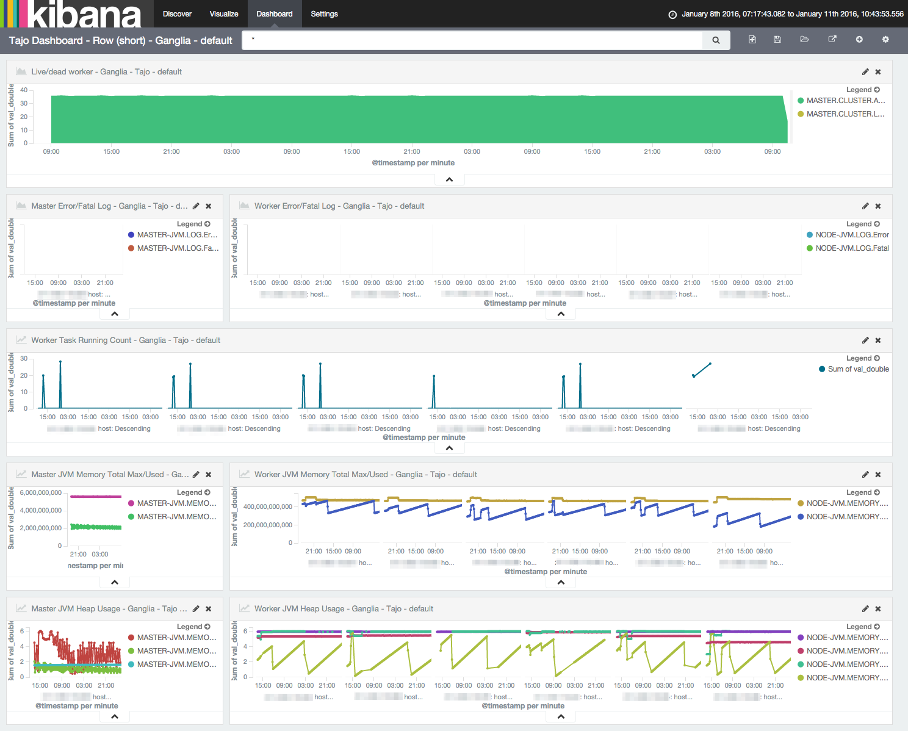
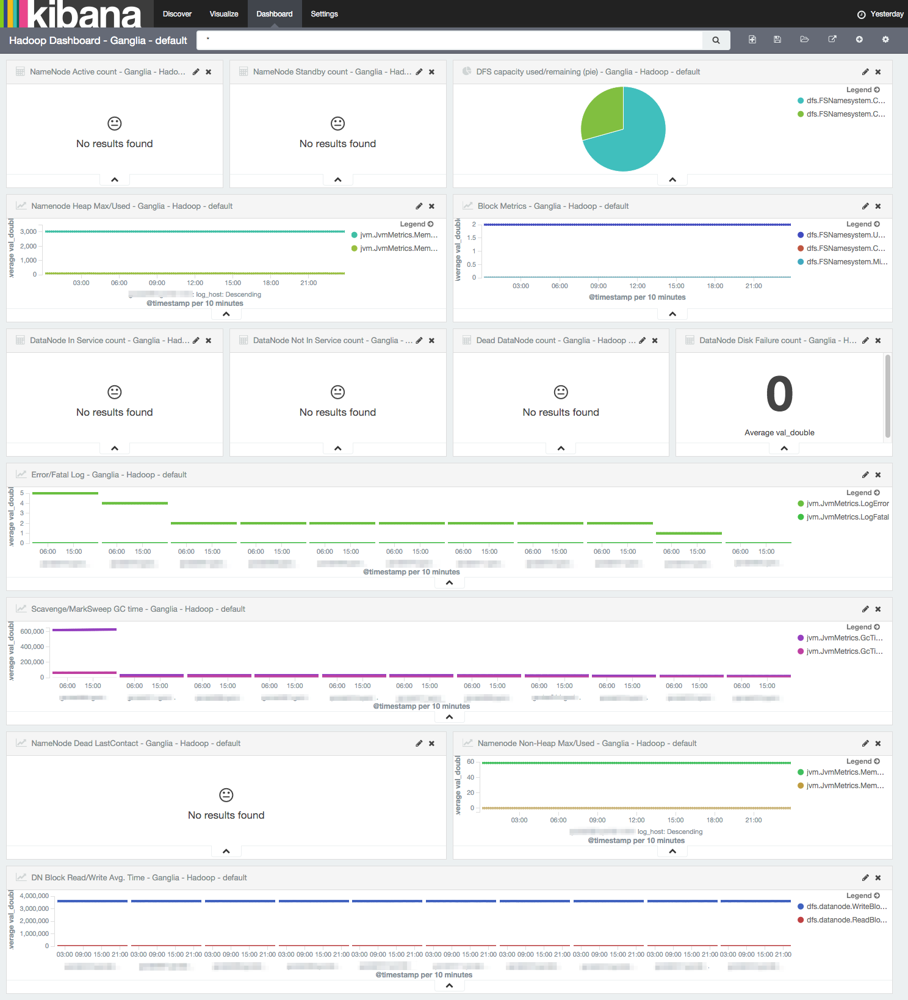
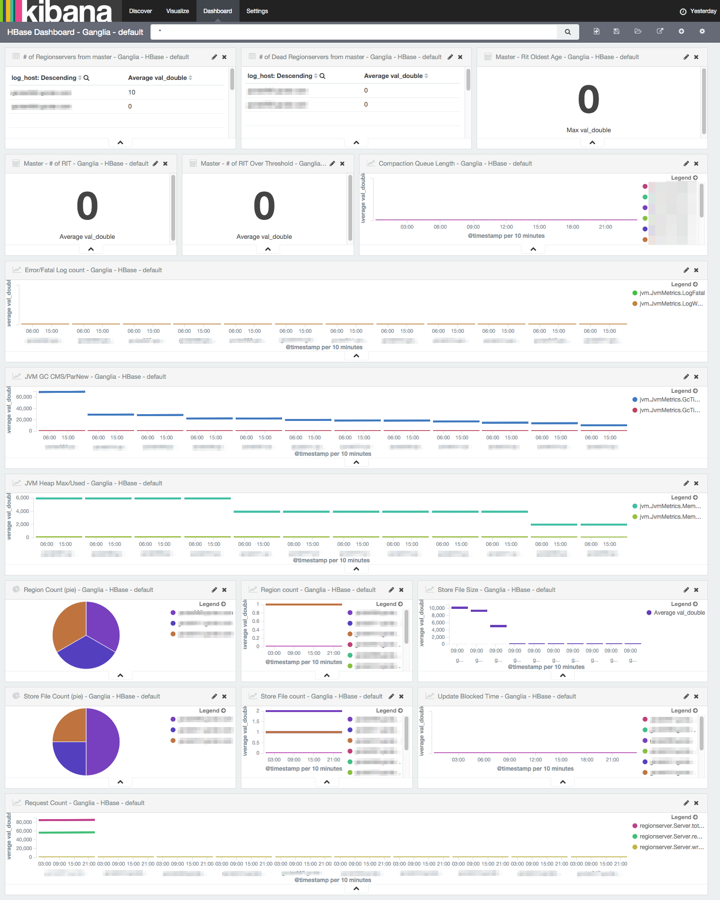
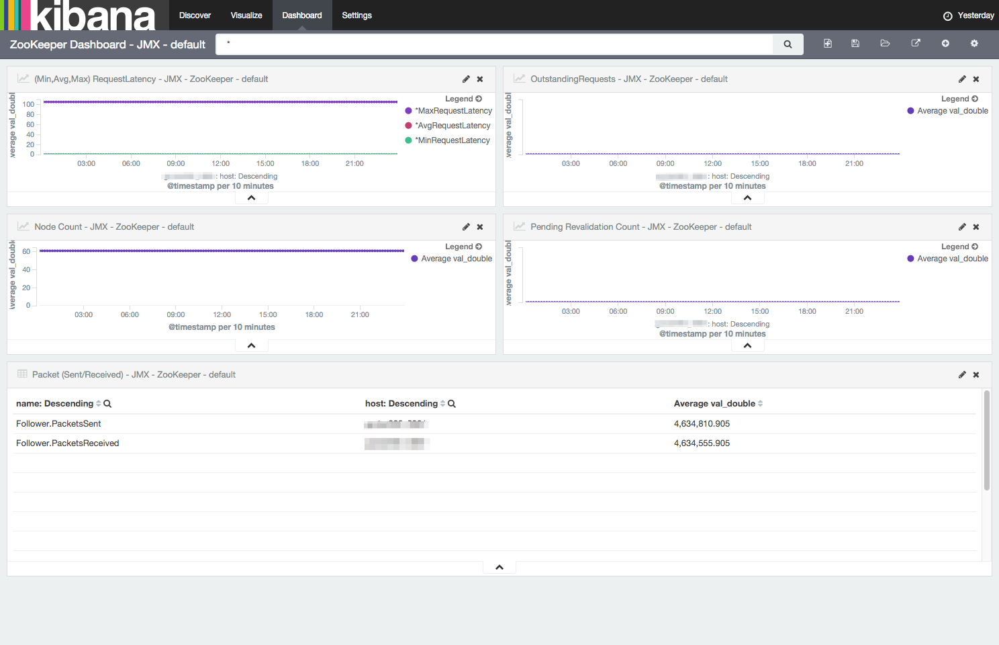
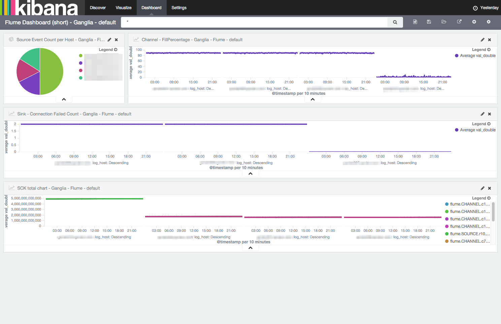

About CloumonELK
CloumonELK is a monitoring solution package based on the popular ELK (ElasticSearch, Logstash and Kibana) stack. It helps you to build your own monitoring stack easily, without hassles to download and install ELK from the scratch. CloumonELK provides predefined configuration files to collect metrics from bigdata components such as Apache Tajo, Apache Hadoop, Apache HBase, Apache ZooKeeper and Apache Flume. CloumonELK can be a good start point to monitor the metrics from bigdata components.
- Support multi-cluster monitoring
- Ready-to-use Kibana dashboards and charts
ELK Versions
- Elasticsearch 2.1.1
- Kibana 4.3.1-linux
- Logstash 2.1.1
Requirements
- x86_64 linux server
- JDK 1.8
- gmonitor user account and its ssh key
Getting started
Download CloumonELK source codes
git clone https://github.com/gruter/cloumon-elk.git
Run the download-modules script to get the binaries of Elasticsearch, Logstash and Kibana.
./download-modules
Then go to your download directory and edit the env.sh file.
$ vi env.sh
ELASTICSEARCH_HOST_PORT=host:port
- host : the hostname of your elasticsearch server. The elasticsearch server stores the metrics of Logstash. If you setup Logstash and E/S on the same host, set it "localhost".
- port : transport port of the elasticsearch (eg. 5921)
Install Elasticsearch
Install elasticsearch with the following command. Change hostname and heapsize according to your environment.
./install.sh elasticsearch -s hostname -m heapsize
ex) ./install.sh elasticsearch -s 192.168.0.100 -m 4g
Install Kibana
Install Kibana.
./install.sh kibana -s hostname -e "elasticsearch_host"
ex) ./install.sh kibana -s 192.168.0.100 -e "localhost"
Install Logstash
Install Logstash.
./install.sh logstash -c target_service -p protocol -s hostname -f config_file -g group_name [-k]
ex) ./install.sh logstash -c hadoop -p jmx -s 192.168.0.100 -f ./hadoop.config -g development
- -c target_service: the name of a service to be monitored. eg. hadoop, hbase, zookeeper, flume
- -p protocol: the protocol to gather metrics. eg. jmx, http, ganglia
- -s hostname: the host where Logstash is installed
- -f config_file: the path of the config file containing target hosts to be monitored in jmx protocol.
- -g group_name: group name of a cluster. CloumonELK can monitor multiple clusters and each cluster is called a group.
- -k: skip installation of Logstash binary. If you already have Logstash binary installed, you can skip the binary installation step with this option.
Supported Components and Protocols
Below is the list of components that can be monitored with CloumonELK.
| Component | Protocol |
|---|---|
| Tajo | ganglia |
| Hadoop | jmx ganglia |
| Hadoop-poller | jmx ganglia |
| Flume | jmx ganglia |
| HBase | jmx ganglia |
| ZooKeeper | jmx |
| ElasticSearch | http |
| System | http |
1) JMX protocol
In case you use JMX protocol to monitor certain component, you need to define the type of server in the configuration file. Below are the supported components and type of server:
- Hadoop
- namenode
- datanode
- journalnode
- HBase
- hbase-master
- hbase-regionserver
- Flume
- flume
- ZooKeeper
- zookeeper
- Tajo
- master
- worker
For the services using JMX, you need to create the config file for each service. For example, hadoop.config would look like:
$ vi hadoop.config
namenode host001
namenode host002
journalnode host001
journalnode host002
journalnode host003
datanode host004
datanode host005
datanode host006
For other services, refer to the sample-installer.sh for more information.
2) hadoop-poller components
hadoop-poller is an additional compent for gathering full metrics of hadoop. hadoop-poller connects to web admin page of namenode, parses the metric information on the page and store the metrics to elasticsearch. To use hadoop-poller, create "namenodes.config" file and add host:port of hadoop namenode in it. For example, if you have a namenode and standby namenode for HA, namenodes.config is likely to be:
$ vi namenodes.config
host001:50070
host002:50070
And then intall hadoop-poller components, like below:
./install logstash -s 192.168.0.100 -c hadoop-poller -p ganglia -f ./namenodes.config -k -g development
Setting up Kibana reports
When you've done with installing CloumonELK, setup the Kibana dashboards and chart templates. You can use built-in templates for the group "development" by the following command:
./kibana-data/restore.sh elasticsearch_host:port template_file group_name
ex) ./kibana-data/restore.sh 192.168.0.100:5911 hadoop-ganglia.json development
The following templates are included in CloumonELK:
- hadoop-ganglia.json
- hadoop-jmx.json
- tajo-ganglia.json
- hbase-ganglia.json
- hbase-jmx.json
- flume-ganglia.json
- flume-jmx.json
- zookeeper-jmx.json
- system-http.json
- elasticsearch-http.json
Create your own installer from sample-installer.sh
sample-installer.sh has a bunch of install commands so that you can install multiple components at once. Build your own installer script based on sample-installer.sh and then install CloumonELK using your installer script.
Viewing Kibana Dashboards
OK, now you've done with CloumonELK setup. Visit http://kibana_hostname:5931 in your web browser and see the Kibana dashboard and charts to monitor your clusters.
Screenshots
Tajo Dashboard (Ganglia)

Hadoop Dashboard (Ganglia)

HBase Dashboard (Ganglia)

ZooKeeper Dashboard (JMX)

Flume Dashboard (Ganglia)
